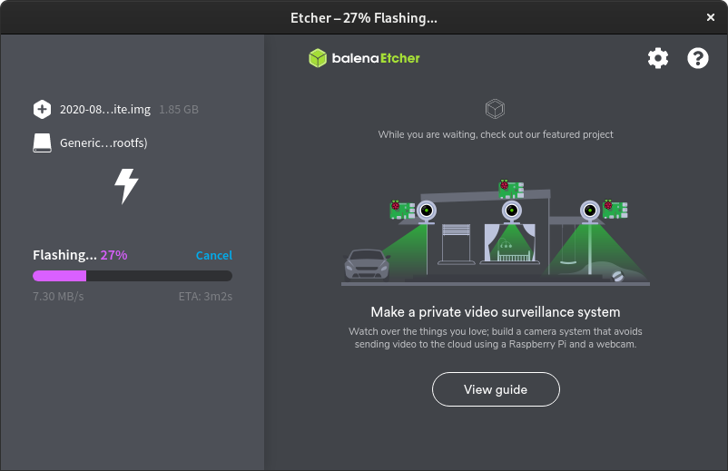

Raspberry Pi Server Operating System Install
Flashing SD Card
This article documents the installation of the August 2020, Debian 10 based release of Raspberry Pi OS Lite, available on the Raspberry Pi Downloads Page.
The Raspberry Pi OS ISO file must be flashed to a microSD card (I am using an eight gigabyte Kingston MicroSDHC card). There are a variety of tools that can be used to flash ISO files, but, at the time of this article's creation, the Raspberry Pi Foundation recommends using Etcher. Etcher is a cross platform image flashing utility, and I have found it to be very very reliable.
Connecting to a Wireless Network
Raspberry Pi OS can easily be configured to connect to a wireless network by adding a wpa_supplicant.conf file to the root of the boot partition of the SD card. That file must contain the text below this paragraph. This assumes that the network uses WPA.
country=US
ctrl_interface=DIR=/var/run/wpa_supplicant GROUP=netdev
update_config=1
network={
ssid="name of network"
scan_ssid=1
psk="password"
key_mgmt=WPA-PSK
}
Enabling SSH
Because this will be a headless server, SSH should be enabled. That can be accomplished by simply adding an empty file named "ssh" to the boot partition of the SD card. This file can be added to the SD card before it is inserted into the Raspberry Pi.
To Be clear, the contents of the "ssh" file do not matter; it simply needs to exist.
Now the SD card can be inserted into the Raspberry Pi. When supplied with power, it will boot, attempt to connect to a wireless network, and enable SSH. In the next article, we will log into the Pi via SSH and configure it further.
| Previous | Published November 11, 2020 | Next |
|---|